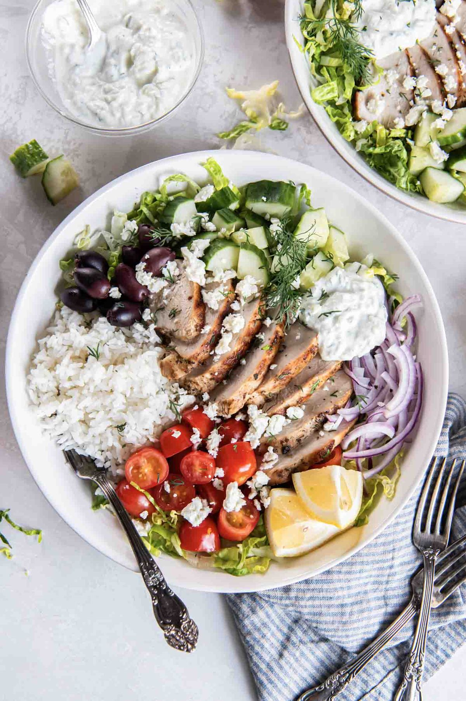

Greek Chicken Bowls

- Meal
- Dinner
- Serves
- 6
- Protein
- chicken
- Cook
- stovetop · 15 min active / 40 min total · easy
- Make-ahead / leftovers
- yes / yes
- Mediterranean
- yes
- WW tier
- light
- Status
- Trying out (probation)
Bowl format the family already likes, with a Mediterranean profile — olive oil, lemon, oregano.
Ingredients
Chicken marinade
- 1.5 lb boneless chicken thighs or breasts
- 3 tablespoons olive oil
- Juice of 1 lemon
- 3 cloves garlic, minced
- 1 teaspoon dried oregano
- Salt and pepper
Lemon rice
- 1.5 cups white rice
- Chicken broth (instead of water)
- Juice of half a lemon
- Salt
Bowl toppings
- Cucumber, diced
- Cherry tomatoes
- Store-bought tzatziki (keeps it quick)
Method
- Marinate chicken at least 30 minutes (or overnight — makes it premakeable).
- Cook rice in chicken broth with lemon juice.
- Cook chicken in a skillet over medium-high, 5–6 minutes per side.
- Slice and build bowls.
Notes
- Good budget meal: chicken thighs are cheapest at Sam's or Aldi.
- Marinade the chicken the night before → 20-minute dinner on the night.
- Uses olive oil as the primary fat → Mediterranean flag earned.